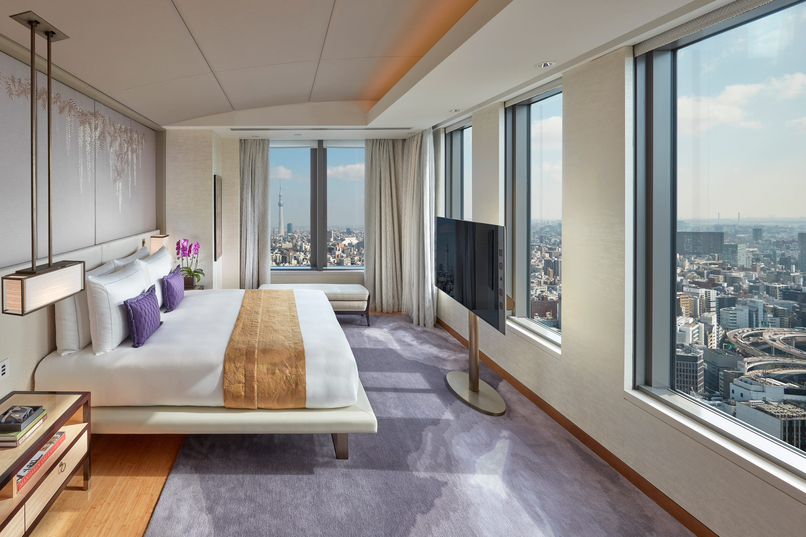
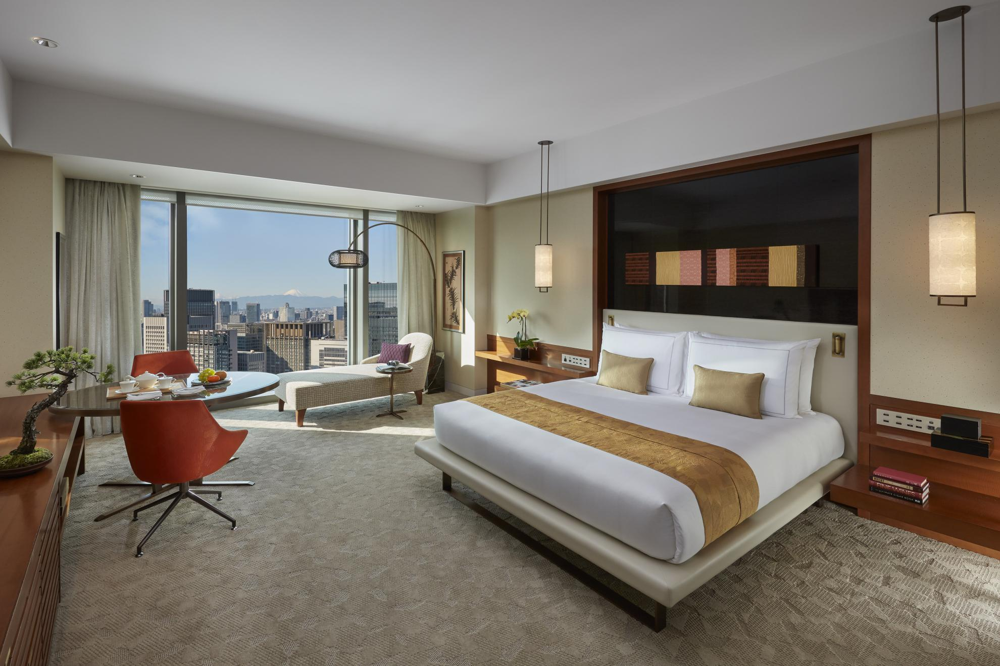
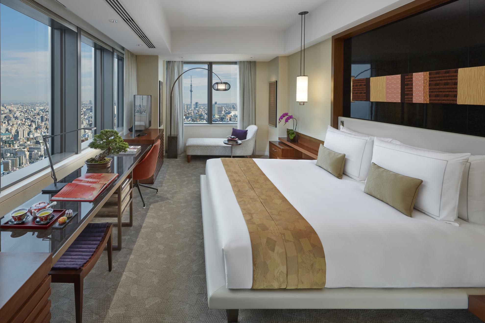

Tokyo Favorite
Mandarin Oriental Tokyo is one of the best choices when food and city views are central to the trip.
Mandarin Oriental Tokyo has been one of the city’s most important luxury hotels for a reason. It is high above Nihonbashi, with rooms that look over the city and a dining program that gives the hotel serious depth. For clients who want Tokyo to be about food, views, and polished service, this is a very strong conversation.
What makes it unique
It is a dining-forward Tokyo hotel with a real sense of place.
Nihonbashi gives the hotel a more rooted feeling than some newer luxury towers. You are close to heritage, shopping, restaurants, and easy movement across the city, while the hotel itself feels elevated and cocooned above it all.
Best For
Food and city views
Best for clients who want restaurants, sky-high rooms, and a polished city base.
Known For
Restaurant depth
Signature, Sense, Tapas Molecular Bar, Sushi Shin by Miyakawa, K'shiki, and Mandarin Bar give the hotel range.
Stay
179 rooms and suites
Spacious rooms by Tokyo standards, with a suite program that works well for longer stays and VIP clients.
Client Type
Refined travelers
Great for repeat Tokyo guests, food-focused travelers, and clients who want established luxury.



Rooms and suites
The rooms are clean, calm, and view-focused. The hotel works well for travelers who care about waking up to the city, then heading straight into a day of food, culture, shopping, or private touring. Suites are the move for clients who want more room to spread out and a more residential pace.
Dining and culture
This is one of the best Tokyo choices when dining is a major part of the trip. I would pair the hotel’s own restaurants with outside reservations: sushi, tempura, kaiseki, yakitori, cocktail bars, and maybe a private market or food-focused neighborhood tour. Mandarin Oriental gives clients enough in-house quality that the hotel itself can carry part of the itinerary.
My honest take
Mandarin Oriental Tokyo is not the newest name in the city, but it still belongs in the top conversation. The views, food, service, and Nihonbashi location make it extremely useful for the right traveler.